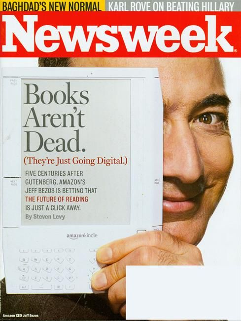

The history of e‑books reaches back decades into the past, but for all practical intents and purposes, the current e‑book revolution started with an impish Jeff Bezos peeking around the side of a strange looking device on the cover of Newsweek magazine in November 2007.